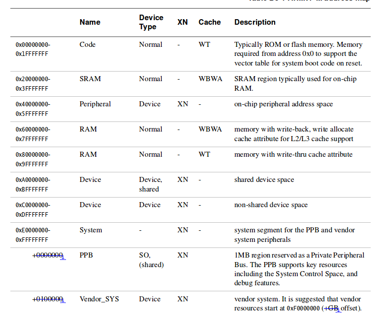

Introduction
The Architecture of a processor defines the instruction set, #registers and functions, memory model, whether having hardware mulitplication and division, whether supporting cache, MPU, TCM.
The Architecture of a processor defines the instruction set, #registers and functions, memory model, whether having hardware mulitplication and division, whether supporting cache, MPU, TCM.
ARM-core register:
Application Program Status Register:
Different from most of 8-bit microcontroller, like atmega 328p, ARMv7-M is more complicated and sophisticated. The hardware of ARMv7-M has two operating level, application level and system level. The concept of level is directly support by hardware instead of virtual levels provided by software. The distinction between application level and system level is the access of instruction and memory. Because of this, the programming can also be divided into two different levels.
ARMv7-M is a memory mapped architecture. The address space ranges from 0x00000000 to 0xffffffff (2^32 4GB). The whole space is paritioned as 8 * 0.5GB paritions. The address space 0xE0000000 to 0xFFFFFFFF (2^29 512MB) is reserved for system level use.
* Atmega328p is a independent memory layout that flash, SRAM and EEPROM have independent address space.
To protected application level code to access privileged range, a MPU is required. The ARMv7-M define a Protected Memory System Architecture (PMSAv7) to do that, but it is optional.
Endian:
This region is a system configuration region.

Interrupt is one type of exception